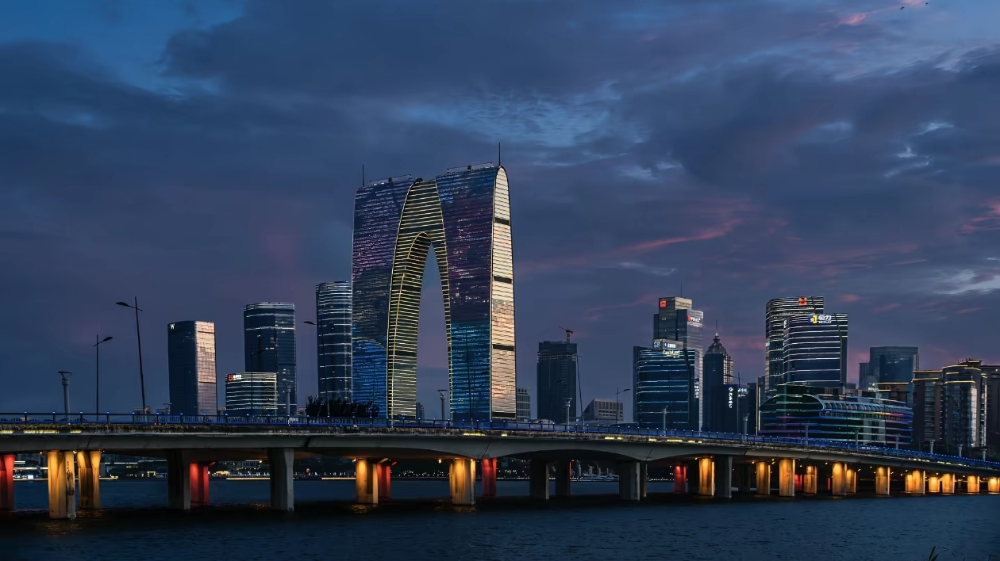

苏州古称姑苏，坐落于江苏省东南部，紧邻上海，距今已有两千五百多年建城史，自古享有“上有天堂，下有苏杭”的美誉。城市河道纵横、水网密布，小桥流水贯穿全城，是闻名世界的江南水乡。
苏州始建于春秋吴国，长期为江南经济、文化中心。这里文风鼎盛，自古才子辈出，昆曲、苏绣、缂丝、桃花坞木刻年画均发源于此，多项技艺列入非物质文化遗产。城内留存数十座古典园林，九座入选世界文化遗产名录。
古城区保留完整古城格局，园林、老街、古寺集中；近郊分布周庄、同里等水乡古镇；现代工业园区兼具繁华都市风光，古典与现代完美相融。
苏州四季分明，温润多雨。春季繁花、秋季银杏红叶最为适合出游；夏季闷热，冬季湿冷，出行可做好对应准备。
赏古典园林、逛水乡古镇、品苏式佳肴、听昆曲评弹、漫步山塘平江老街，沉浸式感受江南独有的温婉雅致的人文风情。